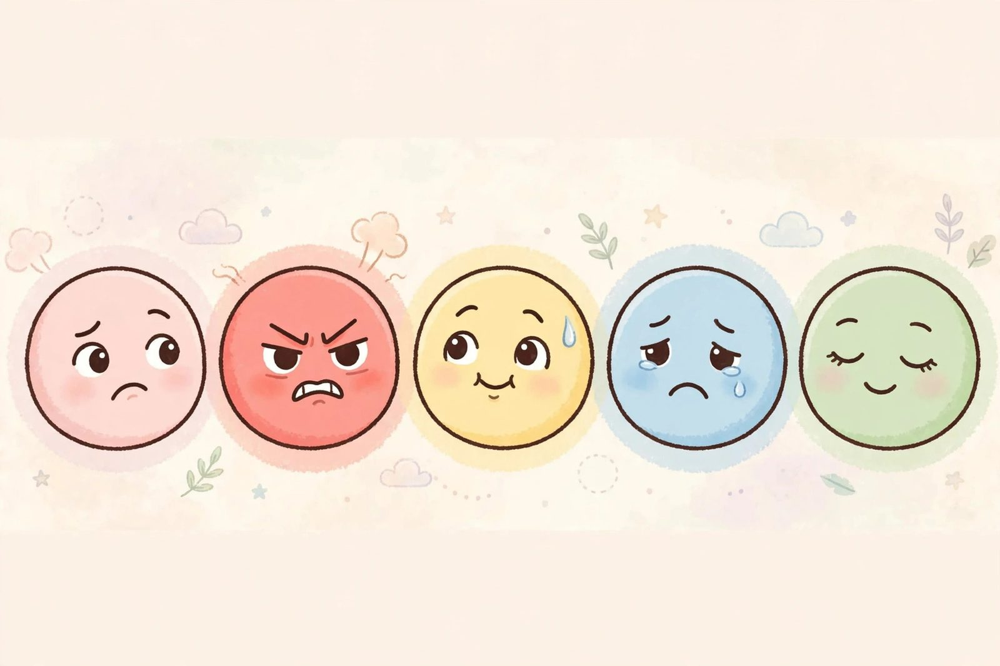

The Five Stages of a Trending Hashtag

Psychologists tell us grief moves through five stages. They were, of course, describing the lifecycle of a trending hashtag. Every hashtag — every single one — travels this exact emotional arc. You can set your watch by it, if your watch is set to "internet time," which is roughly a day and a half.
Stage 1: Denial
"What's the hashtag?" you ask, scrolling past it for the sixth time. "I don't get it. Is this a thing? It can't be a thing." It is a thing. Your entire feed is the thing. Your coworker has already used it in a meeting. Denial, in the hashtag lifecycle, lasts approximately ninety minutes — the time it takes your brain to admit that yes, the whole internet is doing the thing now, and yes, you will too.
Stage 2: Anger
"This is so STUPID. Why is everyone posting this? Do people have NOTHING better to do?" This stage is characterized by quote-posting the hashtag to complain about the hashtag, which — and we cannot stress this enough — is participating in the hashtag. You are not above it. Nobody is above it. The algorithm sees your rage and counts it as engagement. Your anger has been monetized. Congratulations on your contribution.
Stage 3: Bargaining
"Okay, but what if I do it ironically?" This is the negotiation phase, in which the user attempts to participate while maintaining a sense of superiority. The ironic version. The meta version. The version with a clever caption that shows you GET it, you're just above it. Reader: there is no above. The ironic hashtag post and the sincere hashtag post are identical in the eyes of the algorithm. The algorithm does not understand irony. The algorithm understands numbers.
Stage 4: Depression
It has been eighteen hours. The hashtag has been everywhere for eighteen hours. Your feed is a graveyard of the same joke told four million ways, and three of them were good, and you've already seen those three. The brands have arrived. A fast food chain has used the hashtag. A car company has used the hashtag. Somewhere, a bank is workshopping a hashtag post, and you can feel the cringe approaching like weather. This is the low point. This is when you consider deleting the apps, moving to a cabin, and living off grid. You will not do this. You have group chats.
Stage 5: Acceptance
The hashtag has vanished from the trending tab. The feed is quiet. A new hashtag is rising — something about a sandwich, probably, or a celebrity's mysterious grocery list. You look back at the old hashtag with a strange fondness. "Remember when everything was that?" you say to a friend. "That was a simpler time," your friend says. It was 36 hours ago. It was, objectively, not a simpler time. But grief does strange things to the memory.
The cycle begins again
Here's the part the psychologists didn't warn you about: the stages are not a line. They are a loop. Acceptance fades directly back into denial the moment the next hashtag appears — "what's THIS one? It can't be a thing" — and round we go. The hashtag is gone, but the hashtag-shaped hole in your feed is already being filled. The internet abhors a vacuum and adores a sandwich.
Take comfort: you are not weak for participating. You are not superior for resisting. You are simply a mammal with a phone, moving through the stages like everyone else, one hashtag at a time, all the way down.